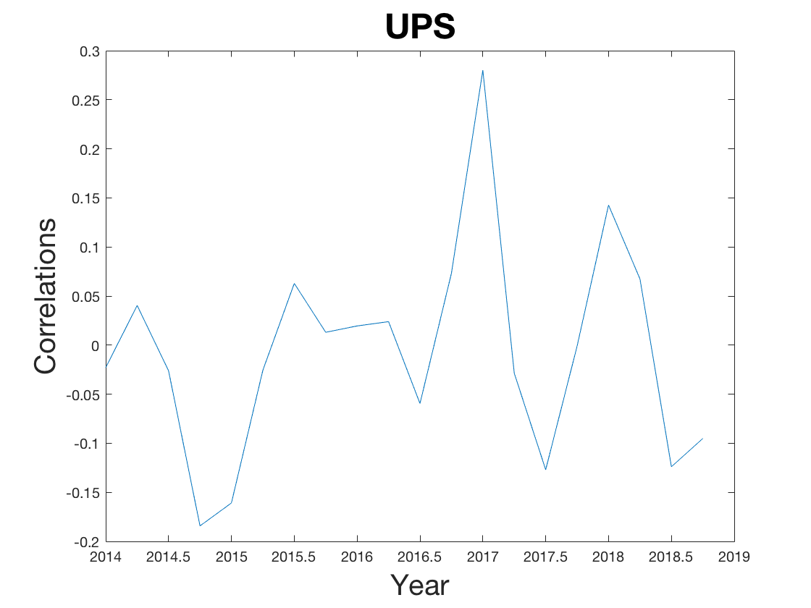
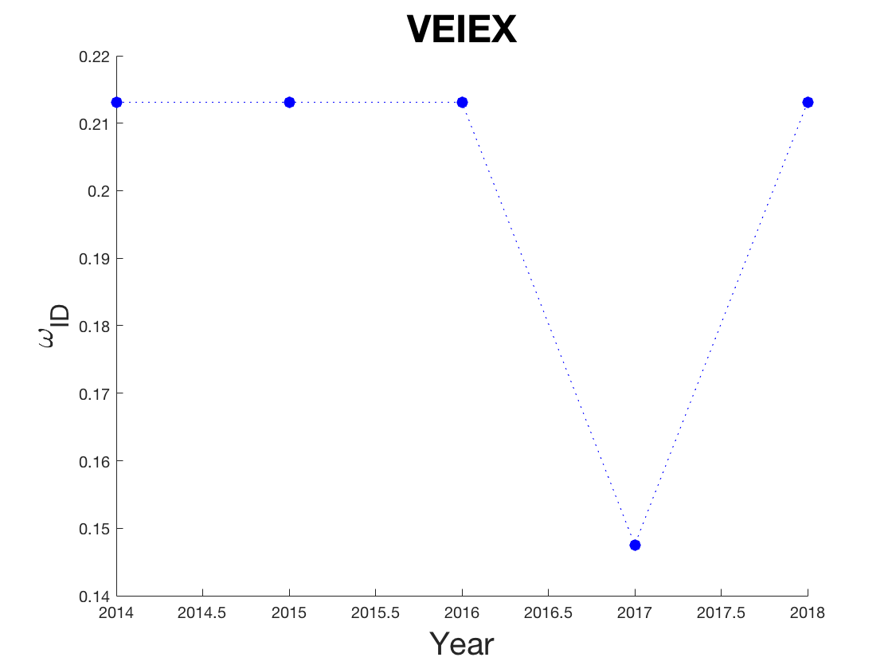

MATH420 HW4
Lily Northcut, Elizabeth O'Callaghan, Jiateng Wang
Contents
load the data
load('hw1_data.mat');
font = 20;
Exercise One
num_years = 5; years = [2014, 2014.25, 2014.5, 2014.75, 2015, 2015.25, 2015.5,... 2015.75, 2016, 2016.25, 2016.5, 2016.75,2017, 2017.25, 2017.5,... 2017.75,2018, 2018.25, 2018.5, 2018.75]; assets={'VFINX','VBMFX','VGSLX','VBLTX','VEIEX','VIMSX','Microsoft','Wells Fargo','UPS'}; average_cor=[]; h=0; for i=1:3 for j = 1:3 correlations = []; for k=1:num_years curr_data = data_group{1,i}{1,k}; q1 = calcQuarter(curr_data(:,j),1); q2 = calcQuarter(curr_data(:,j),2); q3 = calcQuarter(curr_data(:,j),3); q4 = calcQuarter(curr_data(:,j),4); correlations = horzcat(correlations,[autoCorr(q1),... autoCorr(q2), autoCorr(q3), autoCorr(q4)]); end h=h+1; figure; plot(years, correlations); title(assets(h),'FontSize',font + 4); xlabel('Year','FontSize',font) ylabel('Correlations', 'FontSize',font) average_cor=[average_cor;mean(correlations)]; end end
Exercise Two
% quarters{1,years}{1,asset}{1,quartered returns} for i=[1:5] for j=[1:9] temp = []; for int=1:4 quart = calcQuarter(data_years{1,i}(:,j),int); if size(quart,1)>61 quart = quart(1:61,1); end if int == 1 temp = quart; else temp = horzcat(temp,quart); end end quarter{1,i}{1,j} = temp; end end for j=[1:9] for i=[1:5] %Q is ~62x4 matrix with columns being the different rows for k=[1:4] Q=quarter{1,i}{1,j}; end l=[]; for a=[1:4] for b=[a+1:4] [h, h, val]=kstest2(Q(:,a),Q(:,b)); l=[l val]; end iDist{1,j}(1,i)=max(l); end end end assets={'VFINX','VBMFX','VGSLX','VBLTX','VEIEX','VIMSX','Microsoft','Wells Fargo','UPS'}; years_string={'2014','2015','2016','2017','2018'}; years=[2014,2015,2016,2017,2018]; %Graphing for i=[1:9] figure hold on title(assets(i),'FontSize',font+4) xlabel('Year','FontSize',font) ylabel('\omega_{ID}', 'Interpret','tex','FontSize',font) plot(years',iDist{1,i},':.b', 'MarkerSize', 25) end
Exercise Three
average_ome=[]; for i=1:9 average_ome=[average_ome;mean(cell2mat(iDist(1,i)))]; end assets={'VFINX';'VBMFX';'VGSLX';'VBLTX';'VEIEX';'VIMSX';'Microsoft';'Wells_Fargo';'UPS'}; T=table(assets,average_ome) T=table(assets,average_cor) % From the graphs in the two exercises above and the average identically distributed omega value, % we can see that almost all the assets do not have a significant % correlation, and can be described by an IID model. Some years for % specific assets are better described by an IID model than others, for % example the omega_ID value for VGSLX is under .2 in 2015, 2016, 2017; % these are the closer values to 0 modeled from these assets. % As seen in the tables, all of the assets except VEIEX have negative average correlation values, % and Wells Fargo and UPS have the closest values to 0 (although they are % all to the power of 10^2 or 10^3). This implies that these assets do not % have a significant correlation. Since a zero correlation implies no % relationship at all, we can be more confident that these assests follow % our independence assumptions. % *VBMFX* has the highest average identically distributed value, which was % only approximately .27 % *VBLTX* has the lowest average identically distributed value, which was % approximately .18 % The correlation calculated in both way are around 0.2 which is low. The % correlation means the asset price for each year are independent. There % are some assets th lower correlation than others. For example VBLTX, % VEIEX, and Wells_Fargo. Thus, these three assets may better be described % as IID model in each year.
T =
9×2 table
assets average_ome
_____________ ___________
'VFINX' 0.22295
'VBMFX' 0.27213
'VGSLX' 0.20656
'VBLTX' 0.18689
'VEIEX' 0.2
'VIMSX' 0.20656
'Microsoft' 0.21639
'Wells_Fargo' 0.2
'UPS' 0.20984
T =
9×2 table
assets average_cor
_____________ ___________
'VFINX' -0.069406
'VBMFX' -0.079435
'VGSLX' -0.013824
'VBLTX' -0.056523
'VEIEX' 0.089885
'VIMSX' -0.013824
'Microsoft' -0.061256
'Wells_Fargo' -0.0076949
'UPS' -0.0065944
functions
function w=autoCorr(r) u1=mean(r); u0=sum(r(2:length(r)))/length(r); v00=(1/length(r)) * sum( (r(2:length(r))-u0).^2 ); v01=(1/length(r)) * sum( (r(1:length(r)-1)-u1).*(r(2:length(r))-u0) ); v11=(1/length(r)) * sum( (r(1:length(r))-u1).^2 ); w=v01/(sqrt(v00)*sqrt(v11)); end function data_one_q = calcQuarter(data, quarter) %UNTITLED5 Summary of this function goes here % Detailed explanation goes here start = round((quarter-1)/4*size(data,1),0)+1; end_val = round((quarter)/4*size(data,1),0); data_one_q = zeros(end_val-start,1); for i=1:size(data_one_q,1) data_one_q(i) = data(i+start,1); end end function stockData = getDataForYear(stocks, dates, startYear) %UNTITLED7 Summary of this function goes here % Detailed explanation goes here startIndex = find(dates==(startYear-1), 1, 'last'); endIndex = find(dates==startYear, 1, 'last'); stockData = zeros(endIndex-startIndex,1); for i=1:size(stockData,1) stockData(i,1) = stocks(startIndex+i-1); end end function [dates, stockData]= getDataFromFile(filename) %UNTITLED6 Summary of this function goes here % Detailed explanation goes here [numtemp, datetext, rawtemp] = xlsread(filename, 'A:A'); stockData = xlsread(filename,'F:F'); numDataPoints = size(datetext,1); dates = zeros(numDataPoints-1,1); for i=2:numDataPoints dates(i,1) = str2num(datestr(cell2mat(datetext(i,1)),'yyyy')); end for i=2:size(stockData,1) if isnan(stockData(i)) stockData(i) = stockData(i-1); end end end function r = returnDaily(x) i=1; while i<length(x) r(i)=(x(i+1)-x(i))/x(i); i=i+1; end end